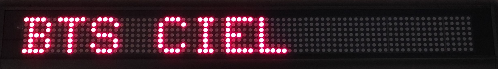

Notre établissement scolaire a décider d'installer des journaux lumineux dans toutes les salles de classes.Ces journaux lumineaux auront principalement 2 rôles:
Le directeur de l'école peut utiliser ces journaux lumineux pour afficher des informations à une classe ou à l'ensemble de l'école.Il dispose pour cela d'un formulaire dans l'onglet"Diffusion"de ce site interne lui permettant d'envoyer un message à un afficheur en particulier où à tous les afficheurs se trouvant sur le réseau. A vous de rédiger un petit tutoriel expliquant l'utilisation de cet onglet avec des exemples.
Les enseignants peuvent eux aussi utiliser ces journaux lumineux dans le cadre de l'enseignement de mathématiques.Un outils a été spécifiquement mis à leur disposition pur saisir des opérations mathématiques simple et afficher le réseultat sur le journal lumineux Pour le moment, les 4 opérations supportées sont:
La suite de ce section sera un tutoriel qui présentera l'utilisation de cet outil:calculatrice.exe
journal lumineux